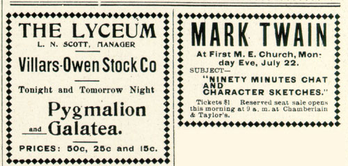

From these two ads in the Duluth News Tribune, you can see how the local sponsors of MT's reading had to bring some of the ticket prices down from the one dollar fixed rate they originally tried to sell them at. The range of prices in the second ad (right) is closer to the rates charged throughout the whole 1895 tour. (The two play ads are included to allow you to compare the prices MT could command with the standard theatrical rates.)
